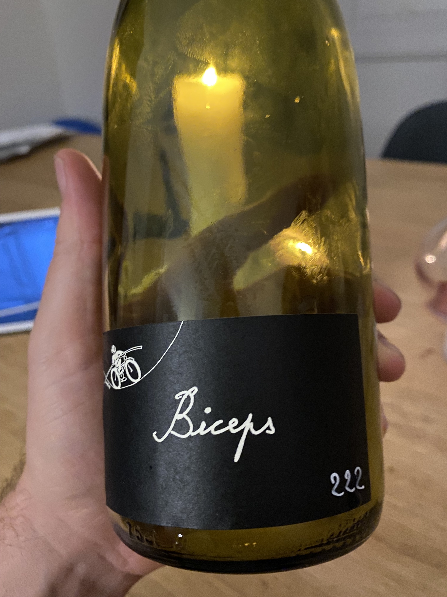
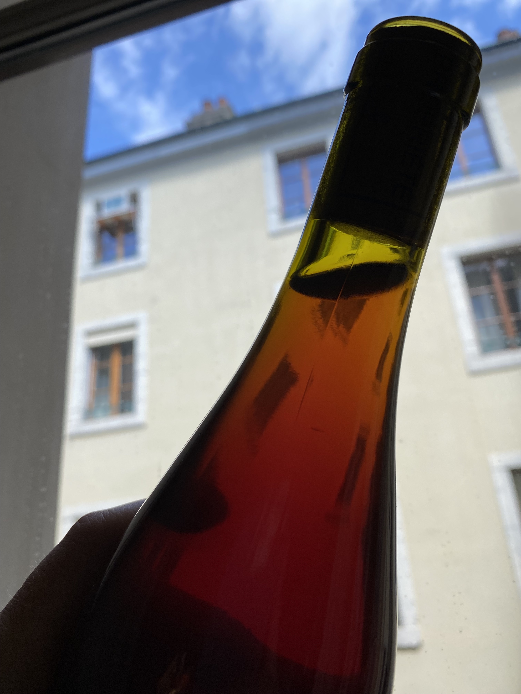
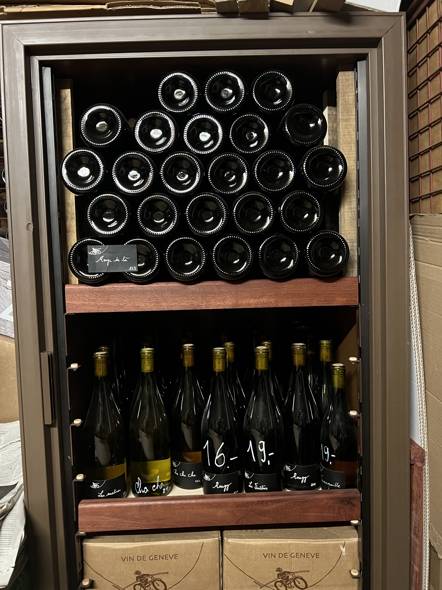
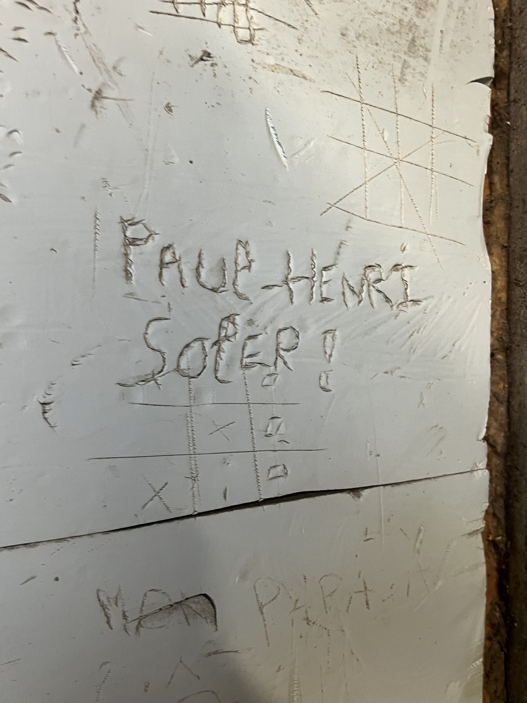
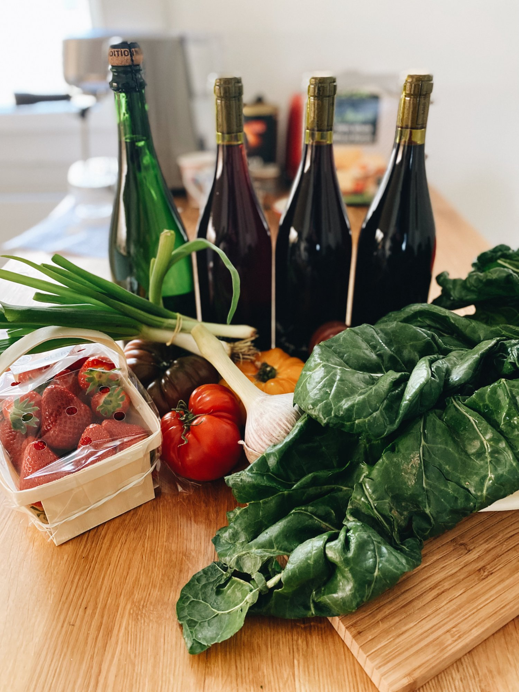

Carouge · Geneva · Switzerland
Paul-Henri Soler
The Saturday market in Carouge is a wonderful way to spend your early afternoon. Like all farmers markets, the shopping is more performative, experiential, than pragmatic — you still need to go to Coop and get the real stuff. But there is one thing worth making the trip for that you genuinely cannot get anywhere else, and that is Paul-Henri Soler's wine.
Paul-Henri is a French guy who married a Swiss woman and set up a small operation near the Geneva airport. I can't really talk to him because I don't speak French, but that doesn't matter — we both know what we're doing. He sources grapes exclusively from the Geneva region, local varieties, local terroir, and makes everything himself with a sensibility that sits somewhere between natural wine and actual wizardry. He's like a French Willy Wonka who, naturally, makes wine.
He is not a large producer. The range changes seasonally, the labels are hand-illustrated with a scratchy bike-riding figure that shows up on everything, and whatever he is selling this week will be good. All the wine obsessives in Geneva — and there are many, this is still Switzerland — quietly revere him. If you're ever at Bombar and you mention Paul-Henri, you will pass the cool test and be greeted accordingly.
"Say his name at Bombar and you will pass the cool test."

There's a wine he makes called Biceps. It's a maceration wine — technically somewhere between white and red, what people call orange wine — but the way to think about it is: a light red you put in the fridge. Drinking temperature, easy, completely sessionable. I have opened a bottle to have a glass and then proceeded to finish the entire thing without noticing.
The colours of his wines are beautiful. The Biceps in particular goes this extraordinary amber-copper colour when you hold it up to the light. Buy one to drink now and one to take home.

He'll happily let you taste everything before buying — that's part of the ritual. On a good Saturday you can stand there and work through four or five wines. There are wooden barrel tables set up where you can sit with a glass if it's a nice day, which in Carouge in summer, it often is. CHF 16–19 a bottle for wine this good is not something you take for granted in Switzerland.
I can promise you with no hesitation that you will like the wine. It's a good vibe all around — one of those genuinely unique Geneva things that you won't find anywhere else and that locals know is special.
"CHF 16–19 a bottle for wine this good is not something you take for granted in Switzerland."



One note: the indoor cellar photos in this tip are from his operation near Meyrin, not the Carouge market itself. That's his little wine dojo.
Write a few lines. Add some photos. We turn it into a proper travel article. Next time someone asks you for a recommendation, you'll have a link.